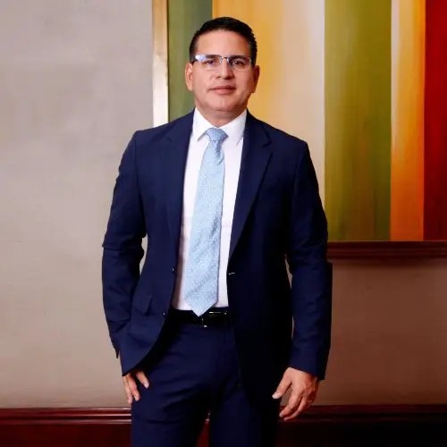

Fabricio Alvarado
Gerardo Fabricio Alvarado Muñoz (San José, 30 de mayo de 1974) es un periodista y político conservador cristiano costarricense. Actualmente es Diputado de la Asamblea Legislativa de Costa Rica por el partido Nueva República. Anteriormente fue Diputado por el partido Restauración Nacional para el período 2014-2018, también fue candidato presidencial en las elecciones presidenciales de 2018 y en las elecciones presidenciales de 2022. En octubre de 2018 anunció su renuncia al partido Restauración Nacional y la fundación de una nueva agrupación política bajo el nombre de Partido Nueva República. Frecuentemente es criticado por sus controvertidas posturas políticas, por lo que es catalogado por algunos grupos como un político ultraconservador, fundamentalista y de posturas contrarias a los derechos humanos.